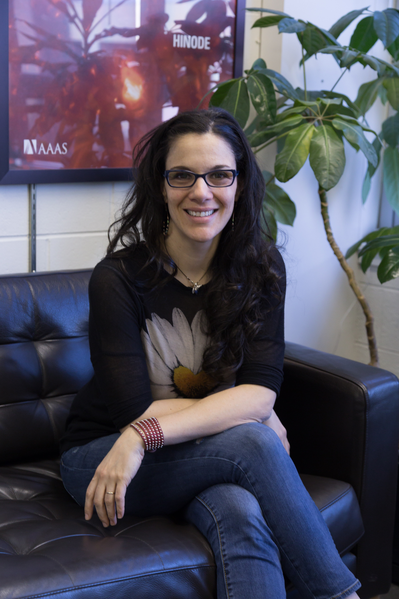

I am a Postdoctoral Fellow at Harvard-Smithsonian Center for Astrophysics working on stellar activity and rotation.
My primary research thrust is employing the power and flexibility of the
magnetohydrodynamic simulations to address forefront problems in astrophysics, for example, explaining the spin-down evolution of young, active stars;
modeling exoplanetary environments in order to assess their habitability; modeling the orbital evolution
of cataclysmic variables; and calibrating measurements of gyrochronology.
My main interest is to address the challenging problem of spin-down evolution for young, active stars.